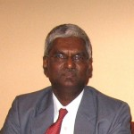

Bangalore Institute Of technology was a pioneer to introduce Computer Science and Engineering as an engineering branch in Karnataka. It was formed in 1981 and has since been one of the top branches not only in BIT but also in Karnataka. 
Prof Dr.S.Nandagopalan(M.sc,M.Tech,M.S,Ph.D.) is not only the Head of the department of computer science and engineering but is also an influential and dynamic figure in the department. Being a humble person, he has always looked at betterment of the students and of the department. He has been teaching CS for the past 28 years.
Year of commencement: 1981
Number of Staff with Ph.D: 02
Number of staff registered for Ph.D: 10
Number of Professors: 02
Number of Associate Professors: 07
Number of Assistant Professors: 17
Number of technical staff: 08
Number of National or International Conferences/Workshops/Seminars attended(Aug,2011 to April,2012): 54
Number of papers Presented(Aug,2011 to April,2012): 07
Number of National or International Conferences/Workshops/Seminars conducted(Aug,2011 to April,2012): 01
Number of books published(Aug,2011 to april,2012): 05
© Copyright 2008. All Rights Reserved.